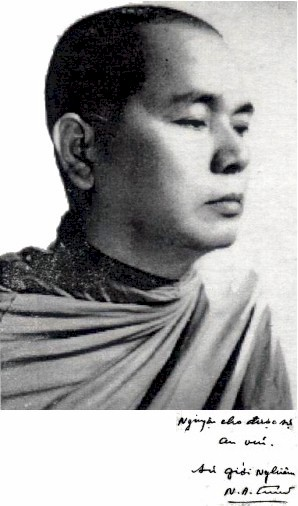

|
BuddhaSasana Home Page |
Vietnamese, with Unicode Times font |
Mi
Tiên Vấn Ðáp
(Milinda Panha)
Dịch giả: Hòa thượng Giới Nghiêm
(Maha Thera Thita Silo)
Tỳ kheo Giới Ðức hiệu đính, ấn bản 2003
TIỂU SỬ HÒA THƯỢNG
GIỚI NGHIÊM
Nguyên: - Tăng Thống Giáo Hội Tăng
Già Phật Giáo Nguyên Thủy (Theravàda) Việt Nam. Hòa thượng Giới Nghiêm (Thitasìlamahathera), thế danh Nguyễn Đình Trấn, sinh ngày 5/5/1921 tại làng Giạ Lê Thượng, huyện Hương Thủy, tỉnh Thừa Thiên - Huế. Ngài xuất thân trong một gia đình có truyền thống đạo đức lâu đời, tại một quê hương nghèo khổ, nhưng lại phát tích rất nhiều tu sĩ và cao tăng thuộc cả hai truyền thừa Nam Bắc tôn. Chỉ riêng trong gia đình, bác của Ngài - Hòa thượng Thích Phước Duyên - và chú của Ngài đều là bậc xuất gia. Còn vị thân sinh - Hòa thượng Thích Quang Diệu (Nguyễn Đình Tải) - sau nửa cuộc đời lập gia đình với mẹ của Ngài là cụ bà Huỳnh Thị Thành, cũng xuất gia, sống đời phạm hạnh. Lớn lên trong truyền thống gia đình như vậy, nên năm chín tuổi, Ngài đã tìm đến một ngôi chùa hẻo lánh, nổi tiếng nhiều thú dữ, ma thiêng nước độc, thuộc địa phận làng Bãng Lãng, để tu học. Ngài thọ giới Sa-di ở đây. Đến năm 1940, vì quê nhà chiến tranh loạn lạc, sự tu hành bị trở ngại, Ngài đã vào Đà Nẵng, xin ở chùa Phổ Đà, sau đó thọ Đại Giới đàn Tỳ kheo, thuộc hệ phái Bắc truyền. Bấy giờ, Phật giáo Nam tông (Theravàda) bắt đầu du nhập vào Việt Nam, nhờ vậy Ngài có cơ hội nghiên cứu giáo lý Nguyên Thủy. Vốn tâm cơ linh mẫn, bén nhạy, và do túc duyên của nhiều đời nhiều kiếp, Ngài cảm thấy đây mới thật đúng là Chánh Pháp, là giáo lý chơn truyền chưa hề bị pha trộn, xen tạp các tư tưởng của các đạo giáo khác. Duyên may đã đến. Năm 1944, Ngài được thiện hữu trí thức giới thiệu và giúp đỡ sang du học tại Phnôm-pênh, Campuchia. Năm 1947, Hòa thượng Niếp-Tích truyền giới Tỳ-kheo (Bhikkhu) theo truyền thống Phật Giáo Nam Tông (Theravàda) cho Ngài. Ngài lại còn được kỳ duyên học đạo với Đức Vua Sãi Campuchia, là Trưởng lão Hòa thượng Chuon-Natch. Do nhu cầu trí tuệ, hiếu học, hiếu tu; từ Campuchia, Ngài tiếp tục sang Thái Lan và Miến Điện để tầm sư học đạo. Rời Pháp học, Ngài quay sang Pháp hành; và ở tại Miến Điện, Ngài được học Thiền Tứ-niệm-xứ với Hòa thượng Thiền sư Mahasì Sayàdaw. Thế là sau hơn mười năm bôn ba xứ người tầm cầu Chánh Pháp, Ngài hồi hương với chí nguyện, mang giáo lý nguyên thủy rất cũ xưa mà cũng rất mới mẻ về Việt Nam để quảng bá, hoằng truyền sâu rộng trong mọi tầng lớp tín đồ. Tại Sài Gòn - Gia Định, năm 1957, Ngài cùng với các vị trưởng lão cao tăng, thạc đức khác, như: hòa thượng Hộ Tông, hòa thượng Bửu Chơn, hòa thượng Thiện Luật, hòa thượng Tối Thắng, hòa thượng Giác Quang, hòa thượng Kim Quang, pháp sư Thông-Kham vận động thành lập Giáo hội Tăng già Phật giáo Nguyên thủy (Theravàda) Việt Nam. Năm 1963, trong lúc tranh đấu chống chế độ độc tài gia đình trị của Ngô triều, Ngài bị bắt ở Sơn Trà - Đà Nẵng. Sau khi gia đình họ Ngô sụp đổ, Ngài được bầu làm Tăng thống Giáo hội Tăng già Nguyên thủy Việt Nam liên tiếp trong bốn nhiệm ky, từ năm 1964 đến năm 1974. Năm 1966, Hòa thượng phát động phong trào chống chế độ lao tù tại các nhà giam Mỹ Thị, Đà Nẵng và Gành Ráng, Qui Nhơn. Năm 1975, Ngài tham gia vào Ban liên lạc Phật giáo yêu nước thành phố Hồ Chí Minh, giữ chức vụ Phó chủ tịch. Năm 1979, Ngài tái đắc cử Tăng thống Giáo hội Tăng già Nguyên thủy Việt Nam. Cũng trong năm này, Ngài được thỉnh tham gia phái đoàn cấp lãnh đạo Phật giáo Nguyên thủy Việt Nam, đi Campuchia để làm thầy tế độ cho các sư sãi ở quốc độ này, đã bị Pôn-Pốt, lêng-Xê-ri bắt hoàn tục. Từ đó, Phật Giáo Campuchia được hồi sinh và thắt chặt tình đoàn kết Việt Nam - Campuchia. Năm 1980, Ban vận động Thống nhất Phật giáo Việt Nam được thành lập, Ngài tham gia vào tổ chức này với tư cách là Phó trưởng ban. Năm 1981, Giáo hội Phật giáo Việt Nam ra đời, thống nhất Phật giáo Nam - Bắc, thống nhất các hệ phái; Ngài được thỉnh vào Hội đồng Chứng minh và được đề cử làm Phó chủ tịch Hội đồng Trị sự Giáo hội Phật giáo Việt Nam. Ngoài ra, Ngài còn tham dự nhiều Hội nghị Quốc tế về Phật giáo, đặc biệt là Hội nghị kết tập Tam Tạng lần thứ sáu tại Rangoon, thủ đô nước Mianma. Trong suốt hơn năm mươi năm xuất gia hành đạo, hoằng pháp và phục vụ xã hội, Ngài đã để lại cho hậu thế nhiều công đức và nhiều công trình Phật sự to lớn. Ngài đã mở một Phật học viện Sơ cấp tại chùa Tam Bảo, Đà Nẵng. Và tại ngôi Chùa Tháp tôn nghiêm hùng vĩ này, nhiều khóa thiền đã được khai giảng để hướng dẫn cho các hành giả là Chư Tăng, Tu Nữ và các hàng Phật tử. Tại Núi Lớn, Vũng Tàu, Ngài khai sơn một rừng thiền giữa thiên nhiên khoảng khoát, rợp bóng mát cây xanh, dành cho những hành giả chuyên tu Tứ-niệm-xứ. Nơi đây gồm có hàng trăm cốc liêu rải rác giữa các sườn đồi, dưới những tàn cổ thụ lâu đời; là nơi mà Chư Tăng, Tu Nữ, Phật tử mười phương thường vân tập về vào mỗi độ an cư để theo học những khóa thiền ba tháng hoặc bảy tháng. Tại Tam Bảo thiền viện này, có rất nhiều hành giả đạt kết quả pháp hành tốt đẹp, khả dĩ làm hành trang tư lương cho mình suốt cuộc đời tu tập. Ở thành phố Hồ Chí Minh, Quận Tân Bình, Ngài mở Phật học viện Trung đẳng tại chùa Phật Bảo, nơi Ngài làm Viện chủ và tiến sĩ Thiện Giới làm Giám đốc Phật học viện. Nơi đây đã đào tạo nhiều Tăng tài cho Hệ phái Nam tông. Sau năm 1975, Ngài tiếp tục mở nhiều khóa thiền tại chùa Phật Bảo; và thường hay lui tới các chùa để nhắc nhở, khuyến hóa, sách tấn tứ chúng môn đồ tinh tấn tu niệm. Về sự nghiệp xây dựng chùa chiền: từ miền Nam đến Cao nguyên, rồi ra miền Trung, đâu đâu cũng có bàn tay và dấu chân của Ngài trong sứ mạng khai sáng Giáo Pháp chơn truyền của Đức Từ Phụ. Ngài đã xây dựng hoặc đứng ra chủ trì xây dựng tất cả mười sáu ngôi chùa sau đây: Huế: Định Quang Tự ở Giạ Lê;
Tăng Quang Tự ở Gia Hội. Về sự nghiệp phiên dịch kinh điển của Ngài, gồm có: NHỮNG TÁC PHẨM ĐÃ XUẤT BẢN: Hạnh phúc kinh. SẮP XUẤT BẢN: Pháp Đoàn kết. Ngoài những sự nghiệp vĩ đại ấy, Ngài lại còn có số đệ tử xuất gia đông đảo nhất của Phật giáo Nam tông. Một số du học ở nước ngoài, đã thành tài, đã trở nên cao tăng, danh tăng đang hoằng pháp ở Mỹ và ở Pháp, như Hòa thượng Tiến sĩ Pháp Nhẫn, Thượng tọa Tịnh Đức, Thượng tọa Chơn Trí, Thượng tọa Đức Minh v.v... Ở trong nước hiện nay, nhiều đệ tử do Ngài tế độ hoặc hướng dẫn đã trở nên những bậc trưởng lão cho tứ chúng y chỉ, hoặc đạo cao đức trọng, hoặc tài đức uyên thâm, hoặc thâm niên cao hạ... như Hòa thượng Hộ Nhẫn ở Huế, cố Hòa thượng Pháp Tri ở Sài Gòn, Thượng tọa Viên Minh ở Bửu Long, Thượng tọa Tâm Hỷ, Thượng tọa Hộ Chơn v.v... Như vậy, cuộc đời Ngài đi qua trần gian không dài, nhưng đã làm việc hết sức mình cho chánh pháp, cho xã hội, cho môn đồ. Năm 1984, đến khi lâm trọng bệnh, mặc dù đã được hội đồng y - bác sĩ bệnh viện Chợ Rẫy hết sức cứu chữa cùng với sự quan tâm giúp đỡ của Giáo hội, của các cấp chính quyền, nhưng bệnh tình vẫn không thuyên giảm. Ngài đã an nhiên thị tịch lúc 10h30' ngày 13 tháng 7 năm Giáp Tý, tức ngày 9/8/1984 tại chùa Phật Bảo, hưởng thọ 63 tuổi. Hàng năm, vào mùa Vu Lan Báo Hiếu, toàn thể Tăng tín đồ Phật giáo Nam tông và Giáo hội Phật giáo Việt Nam làm lễ tưởng niệm cố Hòa thượng, một vị trưởng lão sáng lập Hệ phái Tăng già Nguyên thủy Việt Nam, một thiền sư đạo hạnh nghiêm minh, một bậc thầy từ hòa khả kính, một cao tăng nhiệt tình trong hàng Giáo phẩm tôn túc của Giáo hội Phật giáo Việt Nam. Trước sự mất mát to lớn ấy, các hàng đệ tử đã đóng góp tịnh tài và công sức xây dựng ngôi Bảo tháp tại chùa Phật Bảo, tôn trí di cốt của Ngài để tưởng niệm công đức và thể hiện hạnh tri ân, quanh năm trầm hoa kính viếng, chiêm bái, phụng thờ. Dẫu Ngài đã đi vào cõi vĩnh hằng nhưng bóng mát của tàn đại thụ mãi còn che phủ các ngôi già -lam, nơi Ngài đã dày công kiến tạo và giáo huấn môn đồ suốt một đời không mệt mỏi. Cầu nguyện cho công hạnh ba-la-mật của Ngài sớm được tựu thành viên mãn. Đệ tử, Trụ trì chùa Phật Bảo, cẩn bút. * * * Lời nói đầuB ộ kinh Milindapanha xuất hiện vào khoảng năm trăm năm sau Phật Niết bàn, do ngài Pitakaculàbhaya ở trung Ấn độ trước thuật bằng tiếng Pàli. Nội dung kể lại những câu hỏi, đáp giữa vua Milinda và tỳ kheo Nàgasena. Những câu hỏi thì đa trí, sắc bén mà lời giải đáp lại thâm sâu, quảng kiến, lợi tuệ; nhiều khi chỉ là những ví dụ cụ thể, bình dân, giản dị, rất bổ ích cho các nhà học giả, người nghiên cứu, kẻ đa nghi cũng như sự học Phật của các hàng hậu tấn.Đi sâu v ào những lời đối thoại, người nắm giáo nghĩa của Phật giáo Nguyên Thủy (Theravàda) dễ nhận ra rằng, những vấn đề được đề cập hoàn toàn là tinh yếu của Tam Tạng Pàli văn, chưa hề pha tạp tư tưởng và kiến giải của các bộ phái phát triển sau này. Do vậy, không lạ gì Phật giáo Miến điện xếp bộ kinh Milindapanha vào Thánh điển, và Phật giáo Tích lan đặt chung với năm bộ Nikàya để tôn thờ và phụng hành.Chúng ta cần biết rằng, các bộ phái Bắc truyền cũng có phổ biến kinh này do người Trung hoa phiên dịch vào các thế kỷ sau T.L kỷ nguyên. Và hiện tại có vài bản tiếng Việt đang lưu hành rộng rãi lấy tên là "Na-tiên tỳ-kheo kinh" như bản của Đoàn trung Còn, và bản của Cao hữu Đính, xuất bản vào năm 1971. So sánh giữa Milindapanha và Na-tiên tỳ-kheo kinh của Cao hữu Đính, chúng ta thấy rằng bản dịch sau đã giản lược chưa bằng một phần ba so với bộ kinh trước; nhưng có nhiều ưu điểm là: cách phân câu, cú pháp, hành văn rõ ràng, mạch lạc, sáng sủa hơn. Tuy nhiên, nếu chịu khó đọc kỹ cả hai bổn, ta sẽ thấy Na-tiên tỳ kheo kinh đã bỏ sót trên 150 câu hỏi, lượt bớt câu hỏi, bỏ sót những chi pháp quan trọng và bỏ sót những ví dụ sống động xoay quanh một vấn đề, làm giảm sút giá trị của bộ kinh cựu truyền không ít vậy. Ngoài ra, thật đáng tiếc hơn, Na-tiên tỳ kheo kinh lại va vấp nhiều lỗi lầm quan trọng về tinh yếu của giáo pháp, ví dụ: * Câu 7: Yoniso manasikàra (như lý tác ý), nghĩa là khởi tâm đến đối tượng một cách đúng đắn, hợp với sự thật, mà dịch là "Nhứt tâm"! * Câu 13: Nàma-rùpa là danh sắc mà dịch là "danh thân"! Tưởng là giống nhau nhưng "sắc" chính xác hơn nhiều. Thân (kàya) theo Abhidhamma có hàng chục nghĩa khác nhau, không đơn thuần là thân tứ đại. Còn danh thân là thân của các tâm sở. Danh là phần tâm và tâm sở, sắc là thân xác tứ đại. * Câu 22, 23, 24, 25: - Vedanalakkhana: hành tướng của thọ, mà diễn giảng là: "cảm thọ vui là tự mình nhận biết và hưởng thọ cái vui ấy"! Xin thưa, "nhận biết" là thuộc về "tưởng", còn "hưởng" là thuộc về ái dục, nó nằm nơi "hành"! - Sannàlakkhana: hành tướng của tưởng mà dịch là giác, không chính xác, dễ lầm lẫn, nên dịch là tri giác: nhận biết đối tượng một cách tổng quát. - Cetanàlakkhana: hành tướng của "tư", mà dịch là "sở niệm"! Lại còn diễn giảng: Sở niệm tức là Tư tưởng! Xin thưa, tư chính là tư tác, nó tạo nghiệp do tham, sân, si khởi lên, nó chi phối "hành" trong ngũ uẩn. - Vinnànalakkhana: Hành tướng của thức, thức ở đây là thức ghi nhận tiến trình kinh nghiệm từ sắc thọ, tưởng, hành...thức; mà ở đây lại nói là "nội động" thì chẳng ai hiểu ra làm sao cả! Thế mà còn định nghĩa: nội động là cái tư tưởng mong cầu xao xuyến trong nội tâm! Suy diễn như thế thì quả là đã đi xa từ và nghĩa nguyên thủy của giáo pháp. * Câu 26: Bản dịch nói: năm cái xúc, thọ, giác, sở niệm, nội động một khi "dung hợp" thành "nỗi lòng" rồi... Ôi! Sao lại gọi ngũ uẩn là "nỗi lòng"?! Và sao ngũ uẩn lại "dung hợp" được như các lượng vật chất? Có lẽ ai cũng hiểu rằng, ngũ uẩn chính là tiến trình sinh diệt của tâm sinh lý, và ngay chính các trạng thái tâm sinh lý cũng sinh diệt, tiếp nối tương tục không gián đoạn. Sai lầm của bản kinh Na-tiên tỳ kheo, đáng buồn thay không phải chỉ có bấy nhiêu, mà ít nhất là vài chục chỗ tương tự thế trong số sáu mươi hai câu hỏi của bản kinh này! Nêu ra như vậy, không phải chúng tôi "cầu toàn trách bị", bới lông tìm vết; cũng không phải chúng tôi vội quy kết những lỗi lầm trên là do dịch giả tiếng Việt, dịch giả tiếng Hán hay từ bản gốc bằng tiếng Pràkrit của phái Nhất thiết hữu bộ kết tập [*]. Chỉ mong nhờ các bậc học giả lỗi lạc so sánh, đối chiếu để truy cứu vấn đề cho sáng tỏ hơn mà thôi. [* Nhiều người lầm tưởng Nhất thiết hữu bộ thuộc Thượng tọa bộ. Không phải vậy. Nhất thiết hữu bộ là một trong 18 bộ phái được tách ra khỏi Thượng tọa bộ sau kỳ kết tập kinh điển lần thứ hai. Các nhà học giả thường gọi đây là 18 bộ phái Tiểu thừa.] Nhận thấy tầm mức quan trọng của bộ kinh, ngoài công việc Tam Bảo bề bộn, chúng tôi phải bỏ thời gian gần hai mươi năm để phiên dịch, trước sau phân thành ba quyển hầu cống hiến bạn đọc. Nay tuổi già sức yếu, biết tuổi thọ không còn mấy năm, chúng tôi ráng dành thì giờ soạn lại, gộp chung thành một quyển. Lần này cũng khá vất vả vì dường như chúng tôi phải làm lại từ đầu: viết lại lời tựa, chỉnh lại văn cú, lược bỏ các đoạn trùng lặp, sắp xếp lại chương mục, bỏ hết câu, chữ, kệ Pàli không cần thiết, chỉnh lại đây đó một số nghĩa, số từ cho chính xác hơn. Làm việc ấy, chúng tôi xem như một bổn phận của mình, những mong hoàn thành một dịch phẩm ít lỗi lầm so với dịch phẩm trước đây để đáp đền Tam Bảo thâm ân. Bộ kinh Milindapanha này, đúng ra phải dịch là "Mi-lin-đà sở vấn", nhưng tên gọi cũ đã quen tai, chúng tôi thấy không cần thiết phải sửa lại. Về tên gọi của hai ngài, Nàgasena, chúng tôi dùng tên phổ thông là "Na-tiên tỳ kheo", và Milinda, chúng tôi âm là "Mi-lan-đà". Các đoạn đối thoại giữa hai vị, chúng tôi ghi "-" ở đầu dòng cho gọn. Dẫu đã rất nhiều cố gắng, nghiêm túc và nhiệt tâm, chúng tôi cũng không sao tránh khỏi những khuyết điểm sau đây: * Để hợp với tư duy người Việt, văn Việt nên đôi chỗ phải phỏng dịch, phóng tác mà vẫn trung thành với câu chuyện, với giáo pháp. * Chúng tôi đã tự ý bỏ tất cả các phẩm, chỉ ghi thứ tự câu hỏi để cho độc giả tiện theo dõi. Cốt ý của chúng tôi là muốn phổ biến một tư liệu quý hiếm rất gần với giáo pháp uyên nguyên; giải đáp, tháo gỡ những thắc mắc cho kẻ hoài nghi để phá bỏ sở tri chướng cho người tu Phật. Chỉ chừng ấy thôi thì công năng diệu dụng của "Mi-tiên-vấn-đáp" thật là bất khả tư nghì rồi. Xin các bậc thức giả cao minh hoan hỷ chỉ giáo cho để lần tái bản được hoàn bị hơn. Mong thay, -ooOoo-
-ooOoo-
[*] Do chúng tôi sắp xếp. [**] Xét rằng, chỉ có phẩm 5 là phần dành riêng cho ví dụ, còn 4 loại câu hỏi còn lại đều nằm lẫn lộn, xen kẻ suốt trong các phẩm, khó phân định rạch ròi.-ooOoo- Ðầu trang | 00 | 00.1| 01| 02 | 03 | 04 | 05 | 06 | 07 | 08 | 09 | 10 | 11 | 12 | 13 | 14 | 15 | 16 | 17 | 18 |
||||||||||||||||||||||||||||||||||||||||||||
Chân thành cám ơn
Tỳ kheo Giới Ðức và Tỳ kheo Tuệ Tâm đã gửi tặng
bản vi tính
(Bình Anson, 03-2003)
[Trở
về trang Thư Mục]
last updated: 04-08-2003